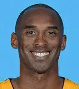

曼巴生平

科比·布莱恩特（Kobe Bryant）是一位杰出的美国职业篮球运动员，出生于1978年8月23日，于2020年1月26日不幸去世。
他以其卓越的技艺和不懈的努力而闻名，职业生涯中为洛杉矶湖人队效力了20年，赢得了5次NBA总冠军。
科比在2008年获得了NBA最有价值球员（MVP）称号，并在2007年、2008年和2012年帮助美国男篮夺得了奥运会金牌。
科比的个人成就包括18次入选全明星赛和15次入选NBA最佳阵容。
他的篮球精神和遗产将继续激励人们追求卓越。